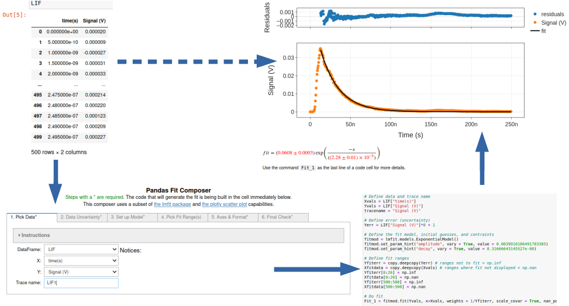

Examples
- Plotting
- Step-by-step simple plot
- Trace formatting
- Error bars
- Plot styling
- Fitting
- Linear
- Polynomial
- Exponential
- Gaussian
- Sine
This package provides Graphical User Interface (GUI) tools to help Jupyter users generate code to analyze, plot and fit tabulated data that has been loaded into Pandas DataFrames (see: Pandas Website for more about Pandas).
These tools are based on Jupyter Widgets and expect to work in a Python 3 kernel. See the documentation for more detailed information on usage and installation.